网店操作：
1、TMS排单调度选择司机，大物流做调车、排单、发车，APP端会实时同步TMS的信息，信息确认并发车后，司机可登录直通宝在进行中的订单中查询到相应的订单信息。
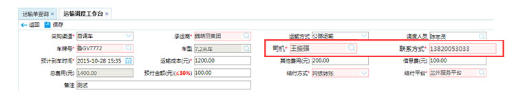
2、在司机端，直通宝APP对在途订单轨迹进行跟踪，对应的跟踪信息实时回传大物流系统。
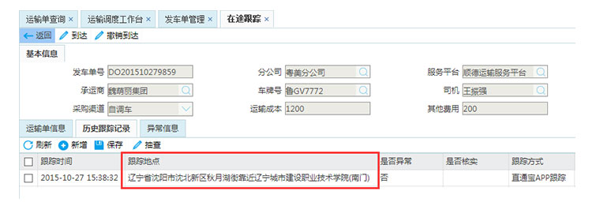
3、送货到达或者TMS手工到达以后APP可以进行卸货确认操作，司机可在APP上做卸货确认以后，TMS的发车单变成已经卸货状态。
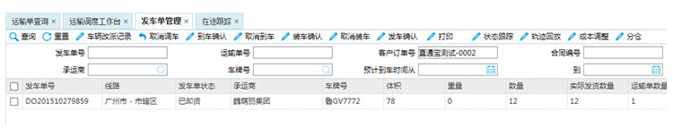
4、卸货确认以后等待司机把客户签收以后的回单通过直通宝拍照上传，上传成功后可在TMS系统上看到司机上传的回单图片。
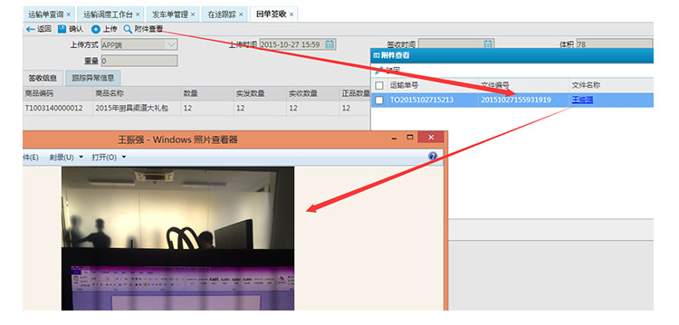
司机操作：
1、系统TMS排单调度选择司机之后，司机登录直通宝可查看当前订单显示在APP进行中订单里面。
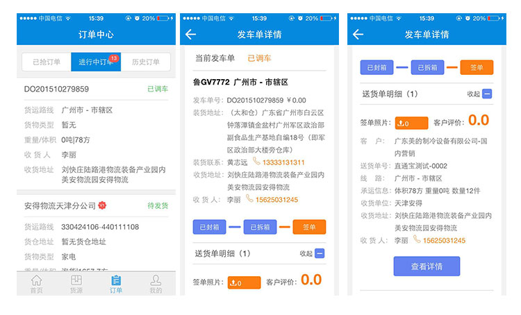
2、网点操作系统发货后，司机要保持登录直通宝以获取跟踪信息，相应跟踪记录将实时回传大物流系统。
3、送货到达或者TMS手工到达以后APP可以进行卸货确认操作，司机可在APP上做卸货确认操作，相应信息传回大物流系统。
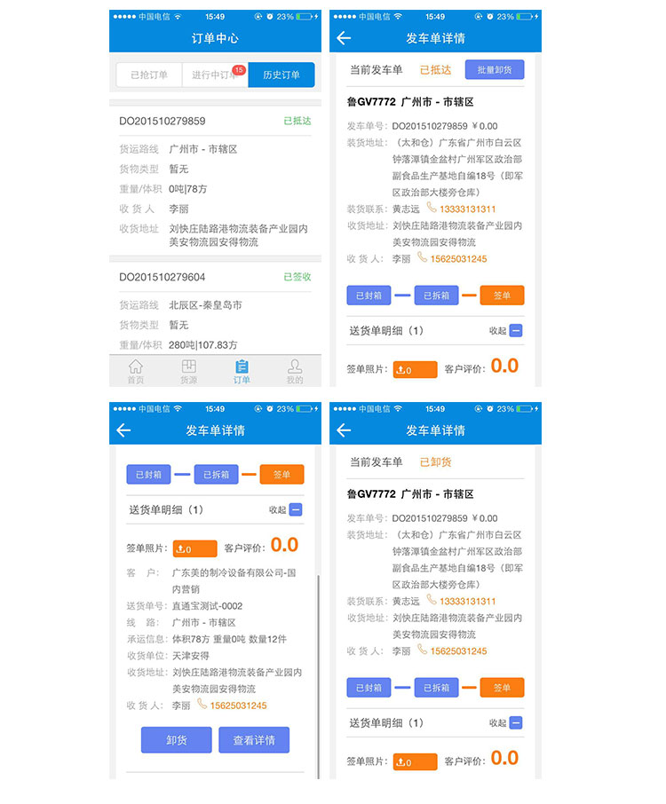
4、卸货确认以后，司机需要把客户签收以后的回单通过直通宝拍照上传，上传成功后网点在TMS系统上可看到司机上传的回单图片。
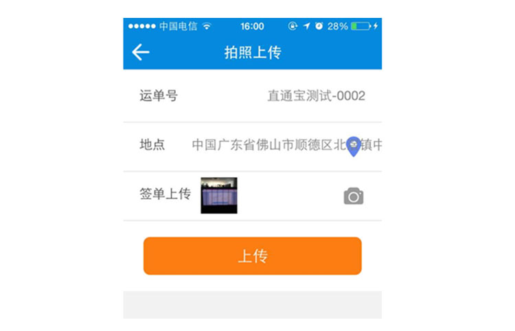
网点操作：
1、在大物流TMS系统上面进行录入订单-预排-任务下发，在TMS进行发布抢单，发布以后可以在货主端查看订单是否发布成功。
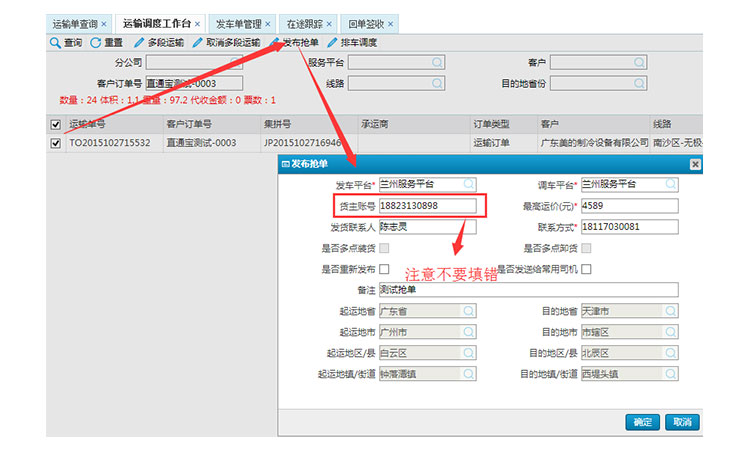
2、订单发布成功后，在货主端APP可以查看相应的货源信息。
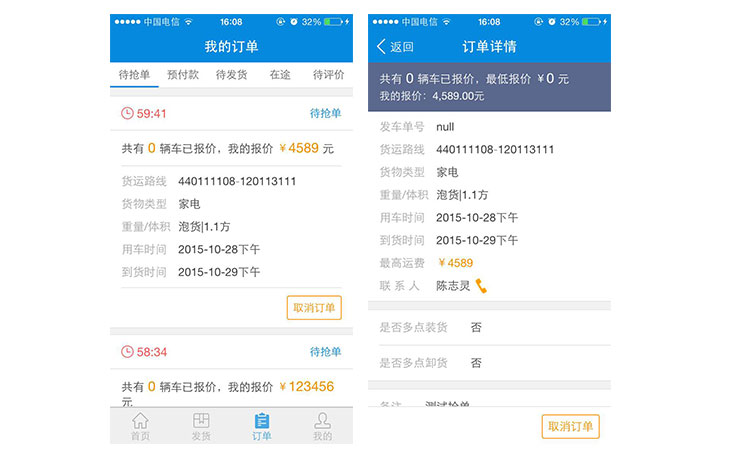
3、发布成功后，等待司机抢单报价。
4、当有司机抢单报价后，货主端会显示抢单司机信息，可以对已经报价的司机进行选择，选择适合自己的司机承运。
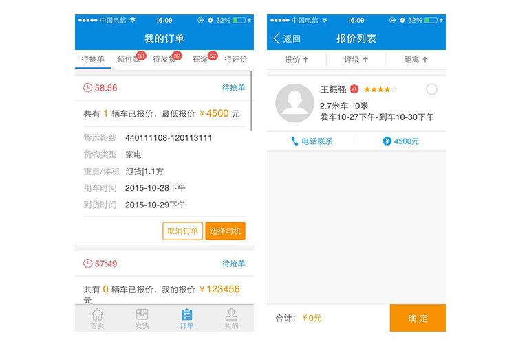
5、选择司机成功后，司机可看到相应信息，等待司机点击发货，订单状态转变为在途。
6、司机到货以后，等待司机点击到货完成，并进行签单上传。
7、司机签单上传成功后，订单状态转变为待评价，货主端对此次司机送货综合情况进行评价（点击[评价订单]弹出评价页面进行评价）。
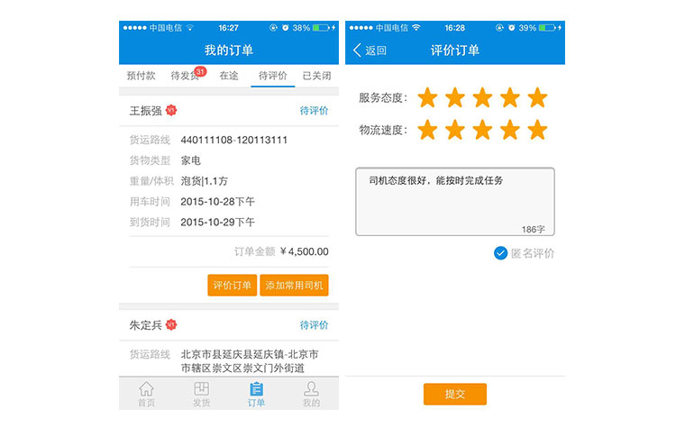
司机操作：
1、网点在TMS系统上发布抢单后，司机在APP上可查看到待抢的订单信息，司机可以选择合适自己的货源进行抢单。
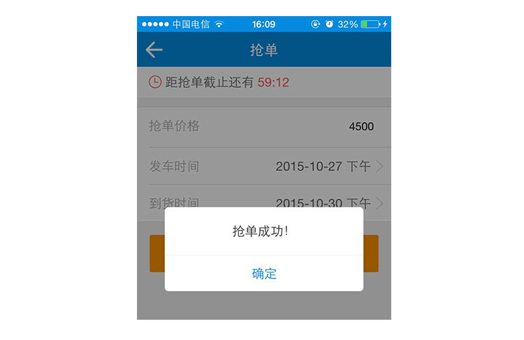
2、抢单成功后，等待货主选择抢单司机。
3、货主选择自己作为承运司机之后，在司机端可看到相应信息，司机需点击发货，订单状态转变为在途。
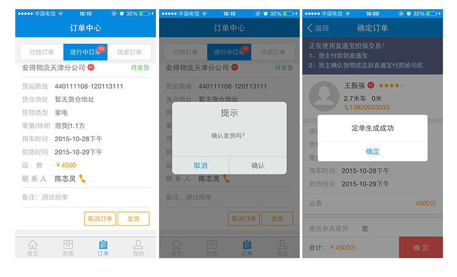
4、司机到货以后，点击[到货完成]并进行[签单上传]，签单上传完毕以后APP上面会显示[已签单]，然后点击确认即可，确认成功后订单就会变成[待评价]状态，此次送货任务就算完成。
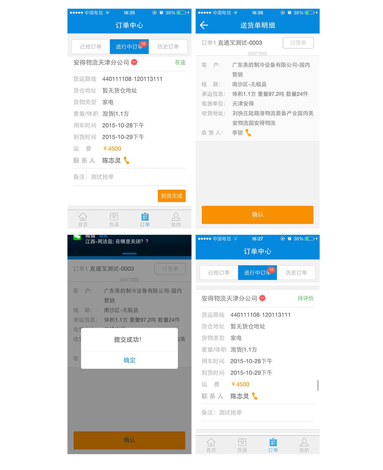
5、等待货主对待评价订单进行评价操作，货主评价后司机可在APP上查看货主对自己的评价。
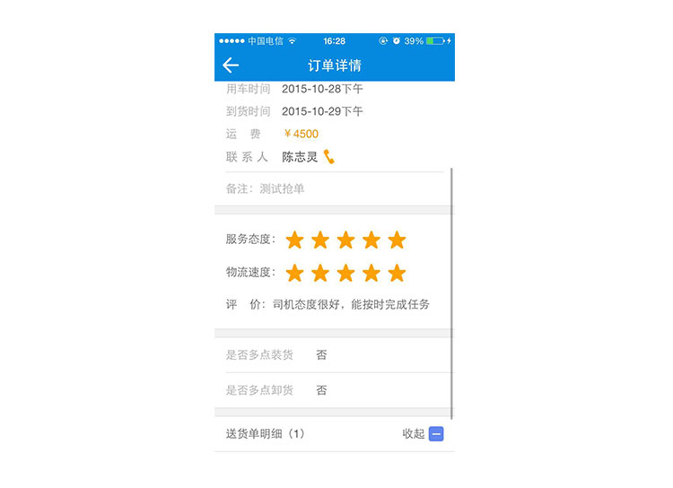